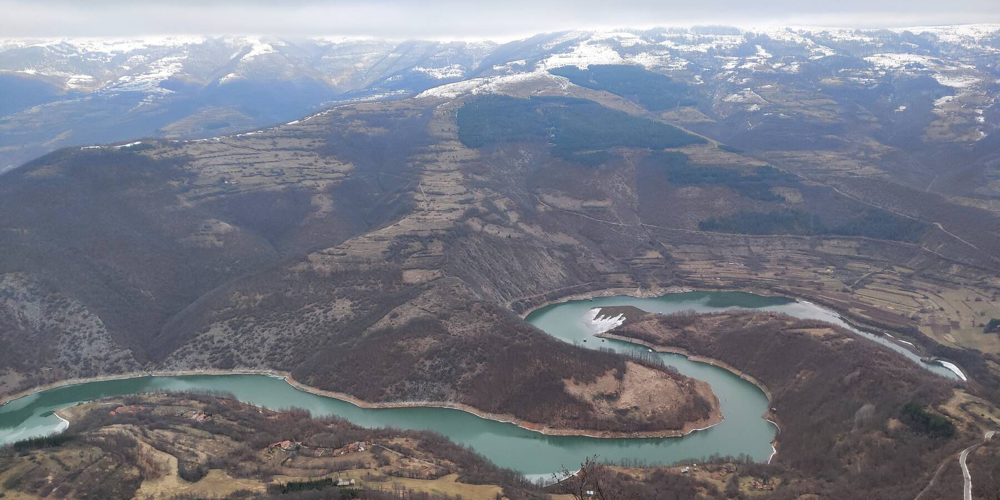
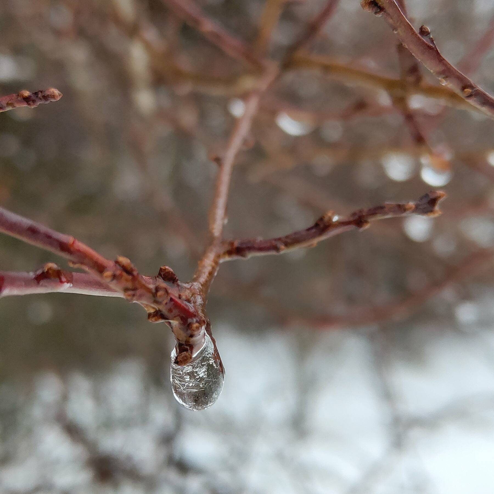
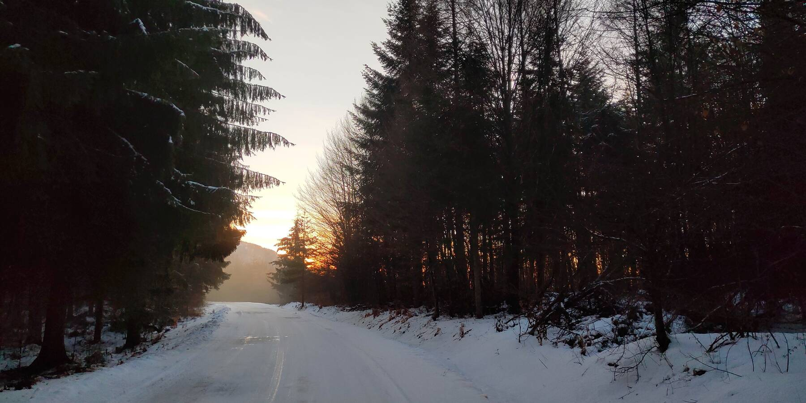
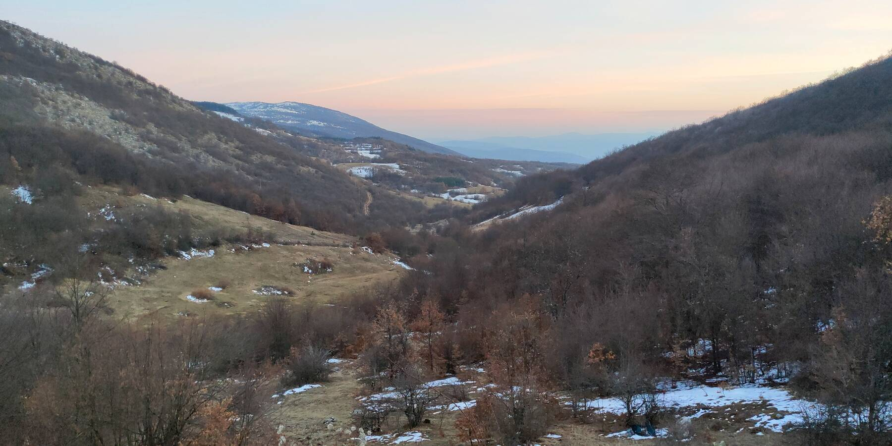

На следующий день в планах был видиковац (обзорная точка по-местному, очень ёмкое слово!) Козий камень, с которого видать озеро Завойское. Там всё как мы любим — меандры, протяжённость «отсюда до горизонта», мост посередине, словом, красота. Плюс неожиданный исторический штрих озера: оно, на самом деле, не совсем искусственное, как можно подумать изначально.
Да, большинство сербских «озёр» — это просто водохранилища ГЭС или затопленные карьеры, натуральные озёра можно пересчитать на пальцах.
Озеро возникло в феврале 1963 года, когда во время таяния снега с гор сошёл небольшой оползень и перегородил реку Височицу. Местные сначала не придали этому значения: «херня, такое было сто раз уже, щас просрётся», но через десяток дней сошёл оползень побольше и высота плотины выросла аж до 50м. Речка стала угрожать Нишу. Силами военных запруда была обезврежена, а потом на этом же месте построили уже нормальную ГЭС. Так боженька показал сербам, как добывать электричество из рек.
Долинка с тающим снегом на склонах, запомните его количество. Времени на картинке — десять утра, мы едем к началу трека на Козий камень.
Тропа начинается почти что на вершине горы Скувия. 1089м, дорога полностью занесена снегом. Чуть ниже ещё проглядывает асфальт, а там вот, на перевале, белая красота. Ну и весна, куды ж без неё. Где-то на середине тропы:

Сам трек совершенно непримечательный и одуряюще простой: ну тропинка и тропинка. Никаких камушков, корней и крутых склонов. Кругом сосенки да ёлочки. Смотреть не на что.
На деревцах повсеместно нарос дубовый мох. Так зовётся эверния сливовая (Evernia prunastri), лишайник, знаменитый своими ароматическими свойствами. Сказывают, что его собирают по всей юго-восточной Европе (читай, на этих наших Балканах) и отправляют во Францию духи делать. Прямо как улиток! Их тут тоже собирают (выкупают у населения по 500 динаров кило) и шлют во Францию на съедение.
Пока шли, думали, не увидим ничего: облака заволокли всё небо, ни краешка голубого не осталось. Добрели до видиковца, а там виды, как с МКС:

Красота, да и только. А нависшее серое небо наоборот дало дополнительного шарму, как по мне. Слегка неземной ландшафт…
На видиковце встретили небольшую группку местных любителей природы. Удивились, что они не орали на всю гору, как обычно это делают сербские туристы. Как правило, собирается толпа человек из семи-восьми и идут, горлопанят на всю катушку (хорошо, если не оставляют за собой мусор)! Медведей отгоняют, что ли… Никакого эмбиента.


К исходной точке спутились в полдень. По времени вроде как рано ещё возвращаться домой, а Пирот смотреть неохота, когда тут рядом такая гора… Двинули на один из местных водопадов. Тупавица называется; судя по картинкам, симпатичный такой, ступенчатый. Ну и высокий, 15 метров, как-никак.
Были небольшие сомнения насчёт проезжабельности дороги до деревни, от которой начинается тропа к водопаду: на карте она обозначена совсем уж третьестепенной, но нет: оказалось, положен отличный асфальт.

Но круче всего в этих тающих ледяных щитах — капли воды; как живые животные, бегающие за полупрозрачной ширмой по своим водяным делам:
В Дойкинцах бросили машину на парковке возле планинарского дома и пошли свои 4км до водопада. На тропе много людей, место очень посещаемое. Полдороги переживал, что идём пешком, а не едем: тропа не тропа, а грунтовая дорога, по которой время от времени проезжали машины. Такая дорожка, местами сложная, но, по моим ощущениям, даже весной проезжабельная на пузотёрке. Было бы интересно. С другой стороны, мы бы нифига не увидели, а путь очень живописный.


Там, далеко на заднем плане, похоже, покрытая снегом вершина Браткова Страна. Разглядывали с Олькой в бинокль: что за странные чёрные треугольнички примерно одинакового размера хаотично разбросаны по её склонам, торчат из снега? Склоняюсь к мысли, что там ёлочки.

Мостик через Дойкиначку реку — и через сто метров, в буковом лесу, водопад. И правда симпатичный: с радугами, ледяными наростами в человечий рост, пухлыми шариками снега.

На обратном пути солнце успело закатиться за соседний холм и было прохладней. Зато освещение — кайф! Обожаю вот эти вот коротко стриженые синеватые макушки гор:

В некоторых деревнях на Старой Планине до сих пор кроют крыши дедовским способом: плоскими тонкими камнями. Из них тут ещё и заборы делают, невысокие, но убедительные.

Домой! На заднем плане — гора Росомачица. Нужно будет туда подняться, когда будем ещё раз в этих местах: пишут, что подъём несложный, а виды открываются знатные.
На перевале Скувия: вышел из машины и офигел. Спрессованный снег скользкий, как каток!

А это — привет первой картинке в посте. За день практически весь снег на склонах растопило! Вовремя мы.
